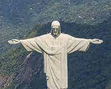

Lugares
-
Cristo Redentor (Rio de Janeiro)
O Cristo Redentor é um dos monumentos mais famosos do mundo. Localizado no topo do Morro do Corcovado, no Rio de Janeiro, o Cristo Redentor é um símbolo do Brasil e um destino turístico popular.
-
Lençóis Maranhenses (Maranhão)
.jpeg)
Os Lençóis Maranhenses são um conjunto de dunas de areia branca que formam um cenário natural deslumbrante. Localizado no estado do Maranhão, os Lençóis Maranhenses são um destino turístico popular para quem busca aventura e paisagens naturais.
-
Chapada dos Veadeiros (Goiás)
.jpeg)
A Chapada dos Veadeiros é um parque nacional que abriga uma grande variedade de belezas naturais, como cachoeiras, rios, trilhas e cavernas. Localizado no estado de Goiás, a Chapada dos Veadeiros é um destino turístico popular para quem busca ecoturismo e aventura.
-
Pantanal (Mato Grosso e Mato Grosso do Sul)
.jpeg)
O Pantanal é uma das maiores planícies alagadas do mundo. Localizado nos estados do Mato Grosso e Mato Grosso do Sul, o Pantanal é um destino turístico popular para quem busca observação de animais e contato com a natureza.
-
Parque Nacional do Iguaçu (Paraná)
.jpeg)
O Parque Nacional do Iguaçu é um parque que abriga as Cataratas do Iguaçu, uma das maiores cachoeiras do mundo. Localizado no estado do Paraná, o Parque Nacional do Iguaçu é um destino turístico popular para quem busca natureza e aventura.
-
Fernando de Noronha (Pernambuco)
.jpeg)
Fernando de Noronha é um arquipélago que abriga praias paradisíacas, águas cristalinas e uma rica biodiversidade. Localizado no estado de Pernambuco, Fernando de Noronha é um destino turístico popular para quem busca relaxamento e beleza natural.